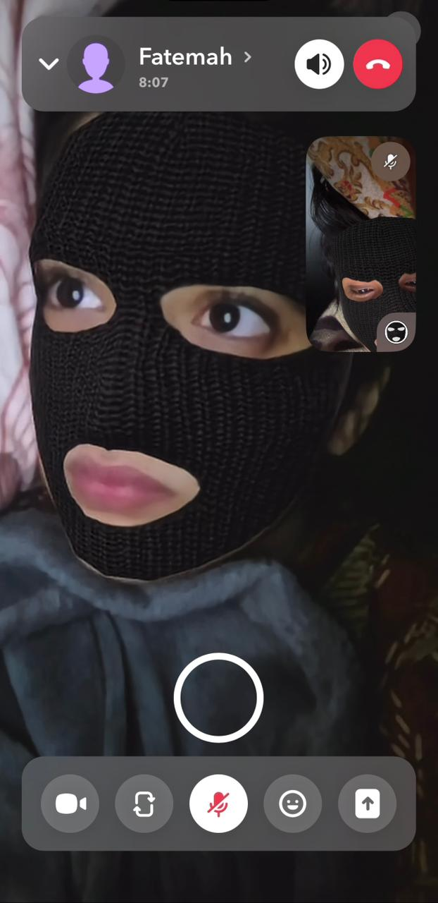
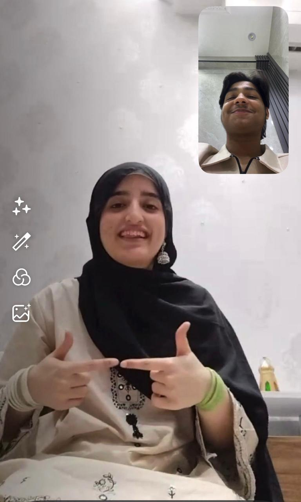
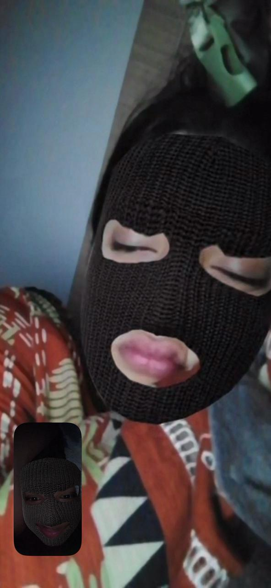
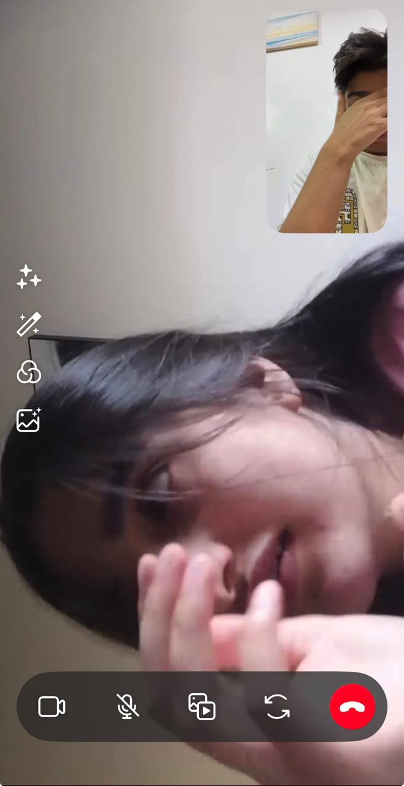

OUR MEMORIES
Six Little Pieces Of Our Story






Hey Faye… I made something for you. 🥹❤️
Just a little place where some of our memories can stay together. ✨
START ✨Back in October, when I opened my other account and saw your ID, I sent you a message just for fun. At that moment, I had absolutely no idea that one random message would slowly become the beginning of such a big part of my life. You told me that you had changed, and somehow from that conversation, we became friends.
We talked about some really heavy things during that time, and I remember trying to be there for you whenever you were going through a difficult moment. Those conversations became a part of what brought us closer.
I don't know exactly when it happened. Maybe it was slowly, maybe it was somewhere between all those conversations, jokes, arguments and random messages. But after that, I fell for you deeply. Very deeply. And it's honestly crazy to think that everything started because I randomly decided to text you.
At one time, you used to love me a lot too, and I still remember the way you used to try. There was a time when you didn't even have a phone, but somehow you would still find a way to message me at random times. Looking back at it now, that might seem like a small thing to someone else, but for me, it meant so much more than that.
We never used to ignore each other. We would listen to each other and somehow always make time for each other. No matter what was happening, there was always that effort. You didn't need to do anything huge or expensive to make me feel something. The simple fact that you still found a way to talk to me was enough.
Trust me, your efforts at that time are one of the biggest reasons I fell even more for you. I noticed those things. I remembered them. And even after everything that has happened, I still remember how much those little efforts meant to me.
When I went to Pakistan in November, life honestly felt so happy back then. We would talk until 6 AM and send each other reels for hours. We could start talking without even realising how much time was passing, and suddenly the whole night would be gone.
Those days felt simple. We didn't need anything special. Just talking to you, sending you something funny, waiting for your reply and knowing that you were there somehow made everything better. We kept getting closer, and for a while, it felt like we understood each other in a way that nobody else could.
But at the same time, we also started drifting apart. You would get upset, and I would keep trying to make it up to you over and over again. Things were never completely perfect between us, but even then, I didn't want to stop trying because losing what we had felt worse than trying again.
We used to call each other too. I remember waking up and seeing your message, sometimes around 12 in the morning. After a while, you would call me and we would just talk. Then we would go back to texting, and when the night came, we would video call and just keep looking at each other.
We would watch reels together, laugh at random things and spend time without even needing to have some big plan. Sometimes you would even fall asleep on the call. Those moments might sound ordinary, but to me, they weren't.
Sometimes we didn't even need to say much. Just knowing that you were on the other side of the screen was enough. We were there together, even if there was a distance between us.
There was one time when things became so emotional that we were both crying on the call. I was asking you to stay with me, and you were standing in the kitchen because your tablet didn't have any charge.
I still remember that moment because everything felt so real. There were no filters, no pretending and no trying to look strong. It was just two people who cared about each other, both emotional, both hurting and both unable to hide what they were feeling.
Some memories don't leave your mind because they were happy. Sometimes you remember them because they were real. And that moment was one of those moments for me.
There was one time when I fell asleep without making things up with you, and then on top of that, you saw my ID which had some smoking stories on it. That made you even more mad.
I remember spending my time trying to make things right again because whenever something went wrong between us, I never liked leaving it that way. I wanted to fix it. I wanted you to be okay with me again.
And somewhere between all the arguments, making up, getting upset and trying again, we also met each other. We met up once and honestly had such a great time together. Even though some moments don't last very long, they can still become memories that stay with you for a very long time.
Things went wrong and right between us so many times. There were good days and bad days. There were moments when everything felt perfect and other moments when everything became completely messed up.
I tried so much, and honestly, I am still trying. But now, a lot of it is up to you. We made promises to each other, and even if you break yours, I still want to keep mine because I truly want you.
If you become mine, I want to give you all the happiness I can. I would listen to you, care for you and try my best to make you happy. I know love isn't supposed to be perfect, but if it is you, I still want to keep trying.
Simply talking to you could make my entire day better. I loved talking to you. When I was with you and talking to you, things felt lighter somehow. You didn't always have to do anything special. Sometimes just receiving a message from you was enough to change my mood.
Like bro, you can literally change my whole mood. You used to say that I talk too much, but at one point, you used to do exactly the same thing. We used to talk so much that sometimes there was always something else to say.
And now when I think about it, I realise that those conversations were never just conversations to me. They became a part of my days. A part of my routine. A part of the memories I still go back to.
Just look at everything that happened in one year. So much changed, so much happened between us, but I am still not letting go. The rest is up to you, but I know that there are so many things about you that stayed in my mind.
To be honest, you look so pretty. Your eyes, and that mole on your face—when I saw it, oh God, mashaAllah. And I still remember that day after the exam when we were both staring at each other. I was shy, while you were with your friends laughing.
Actually, I love your laugh too. I remember your expressions and so many other little things that can't just be explained properly in words. Maybe that's the strange thing about caring about someone so much. You start remembering things that other people wouldn't even notice.
There are so many things that can't just be said, but I remember everything.
When you went to Pakistan in July, we suddenly didn't have any contact. Before you went there, I know things between us had actually started getting better again. But after you went, idk, maybe something changed.
We didn't contact each other because of your network problem, and everything suddenly became quiet. It felt strange going from talking so much to barely knowing what was happening with each other.
Sometimes silence can feel louder than words, especially when you were used to having someone around all the time.
I would still wonder where you were going throughout the day. I used to think about you all the time. Even while watching reels, I would think about you.
While watching a movie, I would think about you. Even when I went outside, somehow you were still on my mind. It felt like no matter what I was doing, there was always some small moment that would remind me of you.
I couldn't forget you. And honestly, I don't think I ever really stopped caring.
I still look at our messages sometimes. I listen to your old voice messages, and damn, I just think to myself, where is my Fayeee?
My most favourite message was that five-minute one, if you remember. Even after time passes, some voices and some messages can take you straight back to a different moment.
And for a little while, it feels like everything is still there again.




IK U DA BEST ✨
THANK YOU FOR BEING A PART OF MY STORY 💗
NOW SMILE, YOU DESERVE IT 🥹✨
It’s okay, I will wait for you Fatema because you are my last. After you I don't even want to love anyone or even talk to anyone. Everything ends with you and it will always be you.
To be honest, you look so pretty. Your eyes, that mole on your face, your smile, your laugh, your expressions and all those little things about you. MashaAllah, there are honestly so many things I remember.
And even when you find flaws in yourself, I wish you could see yourself the way I see you. You don't need to be perfect. The things you worry about don't make you any less beautiful.
I hope you liked the gifts. Take care of yourself and don't stress about the future. You can do it and you will.
It's up to you now but I will still try my best or I will keep trying.
I will wait at the edge of the forgotten road.
Some stories don't need perfect endings to mean something.
Thank you for every conversation, every call, every reel, every smile and every little memory.
Now smile, okay? 🥹✨